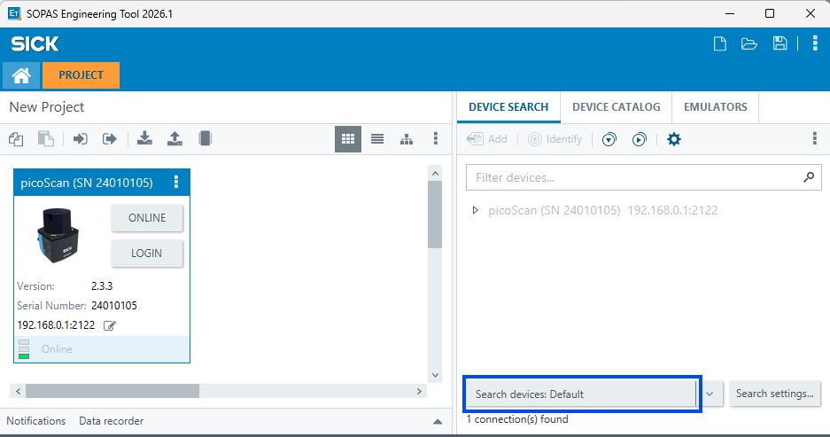

Device Discovery¶
There are three ways to find a sensor:
- Use the default IP for a direct first connection.
- Use SOPAS ET network search when the sensor is already connected to a local network.
- Implement discovery yourself when discovery must be part of an application or provisioning workflow.
Default IP¶
For a direct first connection, connect the sensor to the computer with Ethernet and use the factory default IP address:
Default IP: parameter and value.
| Parameter | Value |
|---|---|
| Sensor IP address | 192.168.0.1 |
| Subnet mask | 255.255.255.0 |
Set the computer's Ethernet adapter to a different address in the same subnet, for example 192.168.0.100, then open http://192.168.0.1/ in a browser. See Getting started for the Windows procedure.
SOPAS ET Network Search¶
SOPAS ET provides a graphical network search for SICK devices. Connect the sensor to the same Ethernet segment as the computer and start the search. The result lists responsive devices with their IP address, MAC address, and device identity.

SOPAS ET network search showing a discovered picoScan device.
Use this approach when the sensor is already connected to a switch or when its configured address is unknown. The search uses the same local broadcast principle as the protocol described below; it does not cross routers. Whether the search finds the sensor and can change its IP address depends on the IP change policy.
Your Own Implementation¶
SICK devices answer a UDP broadcast discovery telegram, so a host on the same segment can locate every device without knowing its address in advance. This requires no authentication and no REST call: send one broadcast datagram to 255.255.255.255:30718; every responsive device replies by unicast with its full network configuration.
This is a limited broadcast: it travels only within the local segment and is discarded at every router boundary. If the device is on a different subnet, connect a host to the same segment and set the address explicitly.
picoScan100 example: Discover devices on the network with Python before implementing the broadcast telegram workflow below. The sensor's SICK discovery service must be enabled.
Request Telegram (24 Bytes)¶
Each field is at a fixed position:
Request Telegram (24 Bytes): bytes, field, value / source, and description.
| Bytes | Field | Value / source | Description |
|---|---|---|---|
| 0 | CMD | 0x10 |
Command identifier for a scan (discovery) request |
| 1 | isBC | 0x00 |
Unicast/broadcast origin flag, set 0x00 even when broadcasting |
| 2-3 | Length | 0x00 0x08 |
Payload length, big-endian; always 8 for discovery |
| 4-9 | Host MAC | FF:FF:FF:FF:FF:FF |
Sender MAC; all-ones for a broadcast request |
| 10-13 | Request ID | random 4 bytes | Fresh random per telegram; devices echo it so you can match replies |
| 14 | Scan flag | 0x01 |
Marks a scan request; the device ignores the telegram if this isn't 0x01 |
| 15 | Reserved | 0x00 |
Must be zero |
| 16-19 | Interface IP | host address | Host interface IPv4, one byte per octet (big-endian) |
| 20-23 | Subnet mask | host mask | Host subnet mask, one byte per octet (big-endian) |
Python Example¶
This script sends the request telegram from the table above and prints every
device that replies within 5 seconds. Set INTERFACE_IP and SUBNET_MASK to
the adapter on the sensor subnet.
import os
import socket
INTERFACE_IP = "192.168.0.100"
SUBNET_MASK = "255.255.255.0"
TAGS = {b"EIPa": ("IP", 4), b"ENMa": ("Mask", 4), b"EDGa": ("Gateway", 4),
b"EDhc": ("DHCP", 1), b"EMAC": ("MAC", 6)}
def field(data, tag, size):
index = data.find(tag) # value starts after the 4-byte tag and a 2-byte header
return None if index < 0 else data[index + 6 : index + 6 + size]
def show(value):
if len(value) == 4:
return socket.inet_ntoa(value)
return value.hex(":") if len(value) == 6 else ("DHCP" if value[0] else "static")
telegram = (bytes([0x10, 0x00, 0x00, 0x08]) + b"\xff" * 6 + os.urandom(4) + bytes([0x01, 0x00])
+ socket.inet_aton(INTERFACE_IP) + socket.inet_aton(SUBNET_MASK))
with socket.socket(socket.AF_INET, socket.SOCK_DGRAM) as sock:
sock.setsockopt(socket.SOL_SOCKET, socket.SO_BROADCAST, 1)
sock.settimeout(5)
sock.bind((INTERFACE_IP, 0))
sock.sendto(telegram, ("255.255.255.255", 30718))
seen = set()
while True: # collect every reply until the timeout
try:
data, sender = sock.recvfrom(1024)
except socket.timeout:
break
values = {name: field(data, tag, size) for tag, (name, size) in TAGS.items()}
identity = (sender[0], values.get("MAC"))
if identity in seen:
continue
seen.add(identity)
print(sender[0], {name: show(v) for name, v in values.items() if v})
Example code: MIT License, © 2026 SICK AG. Provided as is, without warranty. Test it before you use it with a machine or in production.
Reply Fields¶
Each reply is a variable-length packet whose configuration fields are tagged: a 4-byte ASCII tag, a 2-byte internal header, then the field bytes. If a tag isn't found, that field isn't present in the response.
Parsing the Replies: tag, field, size, and encoding.
| Tag | Field | Size | Encoding |
|---|---|---|---|
EIPa |
Device IP address | 4 | IPv4 big-endian |
ENMa |
Subnet mask | 4 | IPv4 big-endian |
EDGa |
Default gateway | 4 | IPv4 big-endian |
EDhc |
DHCP flag | 1 | 0x01 = DHCP, 0x00 = static |
EMAC |
MAC address | 6 | hex bytes, MSB-first |
If a tag isn't found, that field isn't present in the response.
Platform Notes¶
Set SO_BROADCAST before sending, or the send fails. On a multi-homed host, bind the socket to the IP of the adapter on the device subnet so the broadcast leaves the correct network interface card. On Windows, set the sensor network profile to Private; a Public profile blocks the inbound unicast replies. See Getting Started.
SICK's discovery tools perform the same broadcast with a GUI. Use them for a quick look; use the raw telegram above when you need discovery built into your own application or a headless provisioning script.
Alternative When SICK Discovery Is Disabled: ARP¶
On picoScan100, SICK's UDP discovery can be disabled for cybersecurity reasons. In that case, the sensor does not respond to the usual SOPAS ET or AppManager search. It can still announce its IP address using Gratuitous ARP, which lets you identify it without the SICK discovery broadcast. This approach finds devices visible on the local network; it does not replace the SICK protocol for discovering and retrieving full network configuration.
Identify the Sensor in Wireshark¶
- Connect the sensor directly to the computer or to a local network switch.
- Capture traffic on the Ethernet adapter connected to that network.
- Apply the display filter
arp. - Look for a SICK MAC address beginning with
00:06:77. - Read the sensor IP address from the ARP packet details, then connect to that address.
Windows¶
Open an elevated Command Prompt and run:
Find an entry whose MAC address begins with 00-06-77; the associated
address is the sensor's IP. This only works when the sensor IP is within the
computer's current subnet. To look beyond the default subnet, configure the
network adapter with a wider subnet mask, such as 255.0.0.0.
Linux¶
Connect the sensor over Ethernet and run:
Find a MAC address beginning with 00:06:77 and use its associated IP
address. As on Windows, this only works when the sensor address is within the
current subnet. A wider mask such as 255.0.0.0 can be used to reach devices
outside the default subnet; 0.0.0.0 is not a valid subnet mask.